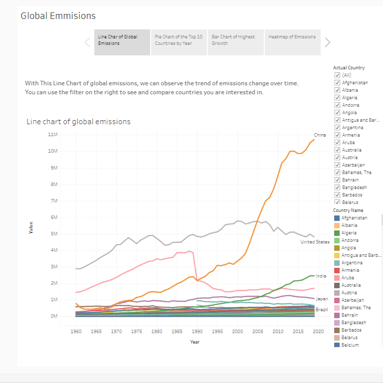
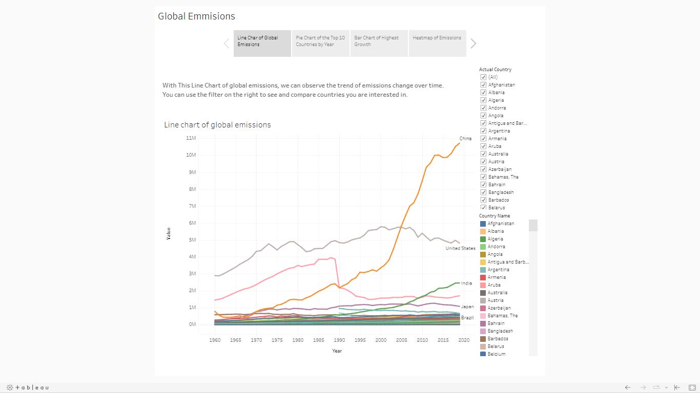
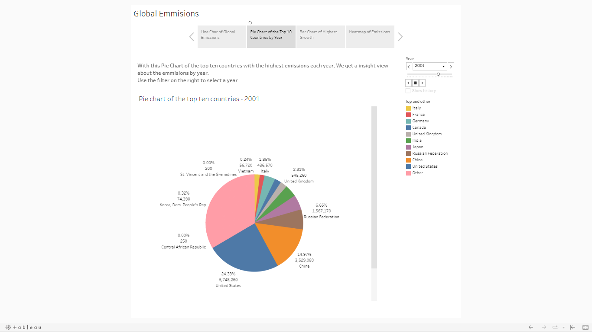
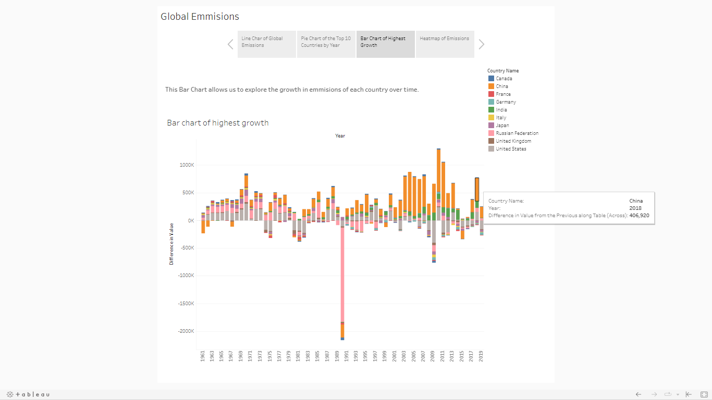
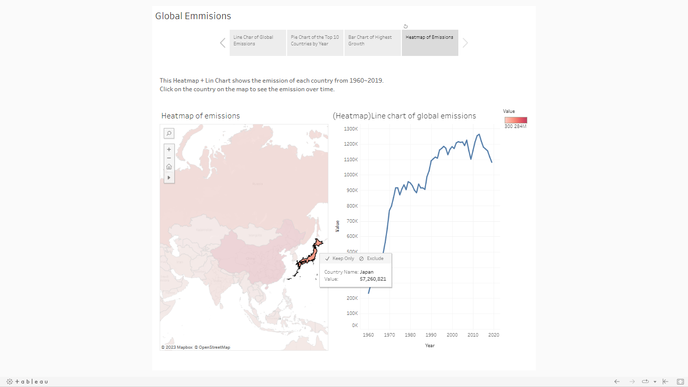

Tableau
Project Title: Total Emissions Per Country (2000-2020) and Any Correlation Found Between
This project aims to analyze and visualize the total emissions of each country from the year 2000 through 2020. The dataset includes the total amount of carbon dioxide (CO2), methane (CH4), and nitrous oxide (N2) emissions by each country for every year. By visualizing this data, we were able to observe the trend of emissions over the years, identify the country with the fastest-growing rate of emissions, and determine the country with the highest emissions.
The data used in the project is obtained from Kaggle (https://www.kaggle.com/datasets/justin2028/total-emissions-per-country-2000-2020), and the original data source is the United Nations' Food and Agriculture Organization (FAO) website. This dataset includes five attributes, 58,766 rows, and 25 columns. The five attributes are: Area (Country), Item (Source of Emission), Element (Type of Emission), Unit (Emissions = kilotons), and Year (Each Year from 2000-2020).
My visualization project contains four charts: a line chart for each country's emissions over time, a pie chart of the top ten countries with the highest emissions and their percentages compared to the world's emissions, a bar chart of the highest growth, and an interactive heatmap showing the emissions of each country. These charts aim to help the viewer explore the data by considering different factors such as year, country, and growth rate, etc.
Throughout this tableau project on "Total Emissions Per Country (2000-2020) and Any Correlation Found Between," I have gained valuable skills in data analysis and visualization. By working with a large dataset and utilizing Tableau's tools and features, I have enhanced my ability to extract insights from complex data and present them in a clear and meaningful way.
One of the key skills I have developed is data cleaning and preprocessing, as I had to ensure the accuracy and consistency of the dataset before visualizing it. This involved handling missing values, standardizing units, and organizing the data into a format suitable for analysis.
Additionally, I have honed my data visualization skills by creating various charts, including line charts, pie charts, bar charts, and an interactive heatmap. Through careful selection of chart types, color schemes, and labeling, I have effectively conveyed information and allowed viewers to explore the data from different perspectives.
Furthermore, I have gained proficiency in analyzing trends, identifying patterns, and drawing conclusions from the visualizations. By examining the emissions over time, comparing different countries, and considering factors such as growth rates and emission policies, I have developed a deeper understanding of the dataset and its implications.
Overall, this tableau project has equipped me with valuable skills in data analysis, data visualization, and critical thinking. It has provided me with a practical application of data exploration and presentation, which will undoubtedly be beneficial in future projects and endeavors.